Cada coluna é um ângulo de câmera diferente do mesmo dash (instante ≈ 0,4 s). Todas as partículas são malhas com volume (tetraedros, icosaedros irregulares, caixas, prismas e toroides), sem sprites.
| Frente | Lado | Alto | |
|---|---|---|---|
| A · Poeira compacta — torrões e grãos lançados para trás | 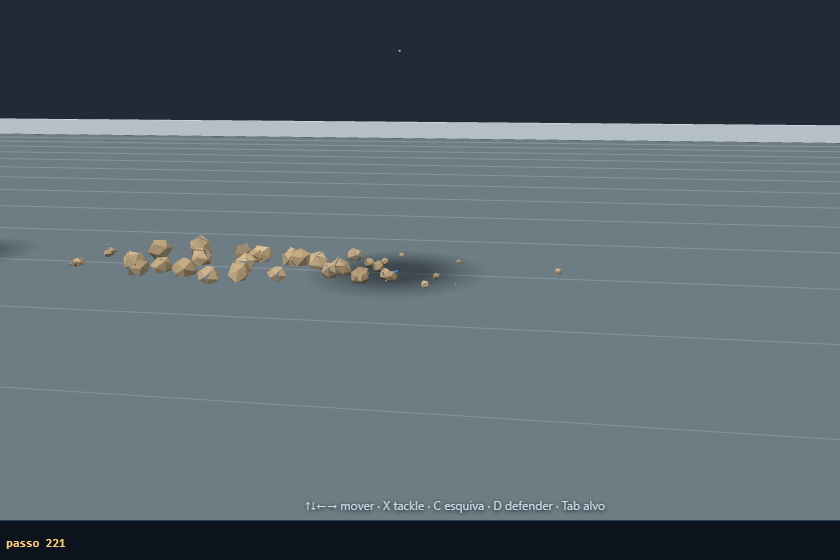 | 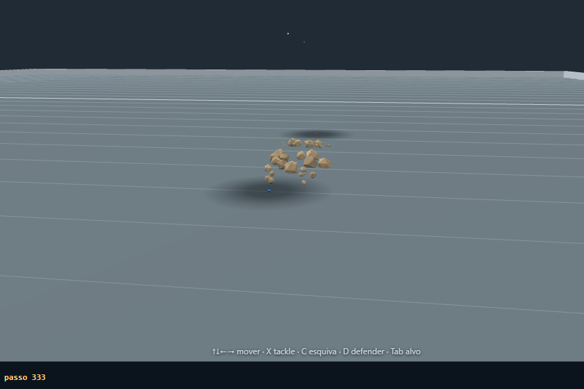 | 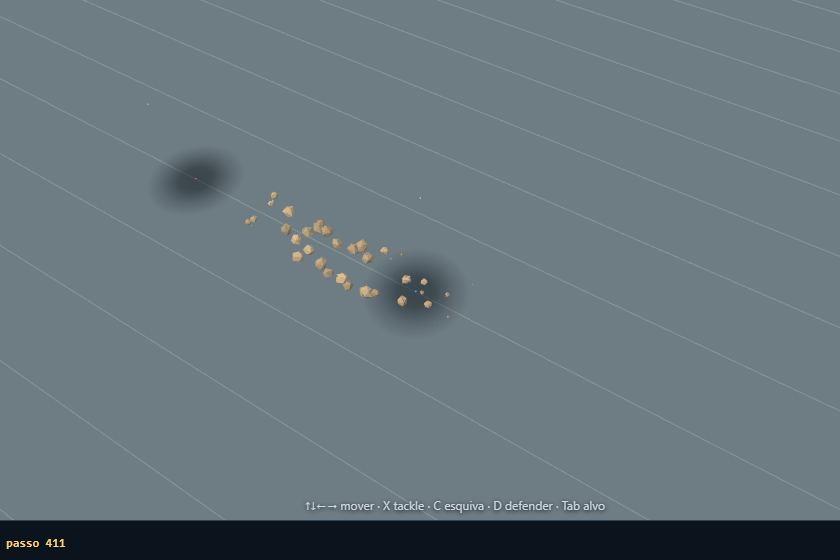 |
| B · Rastro turbulento — volumes que giram e se dispersam | 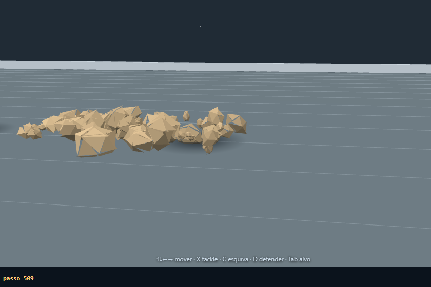 | 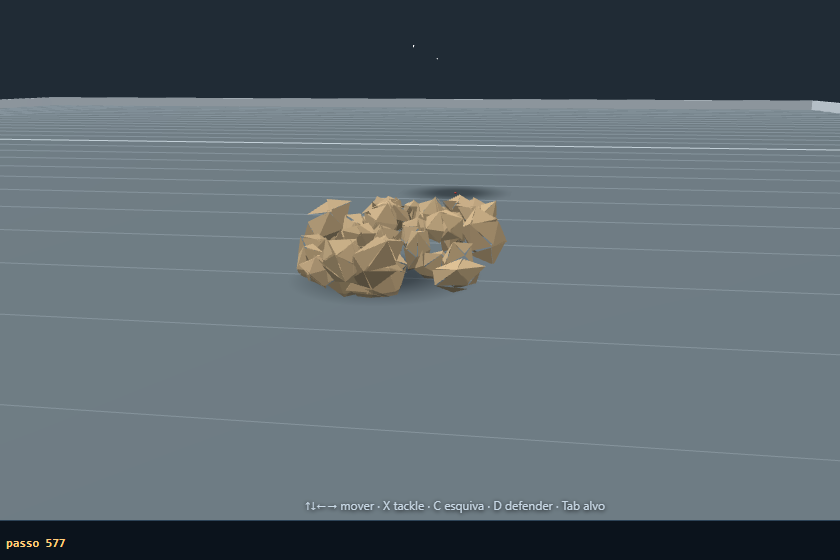 | 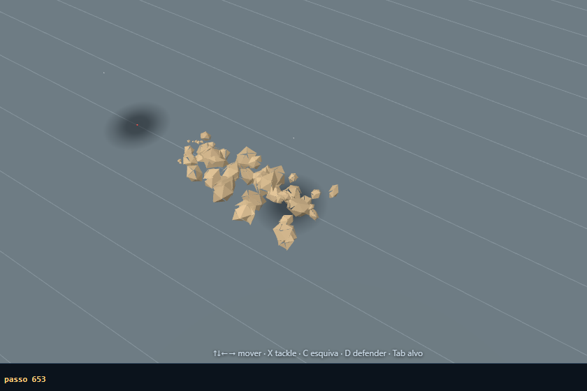 |
| C · Impacto pesado — blocos grandes no início, depois grãos | 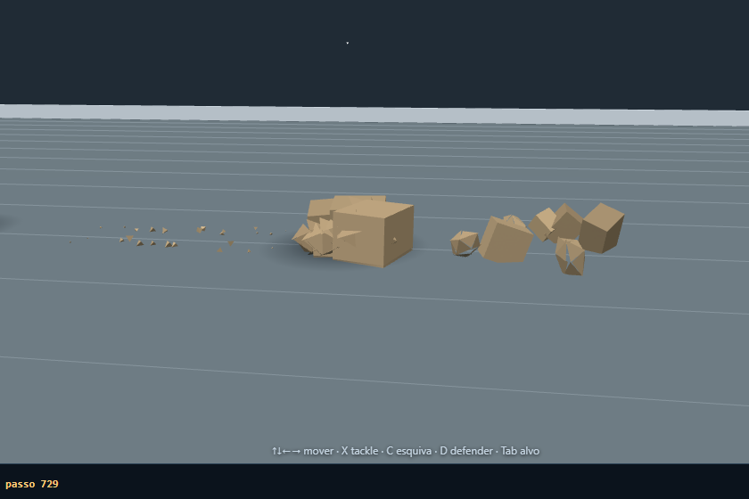 | 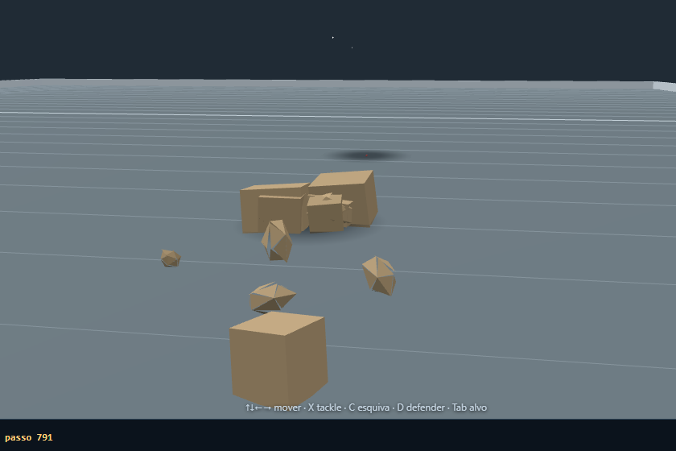 | 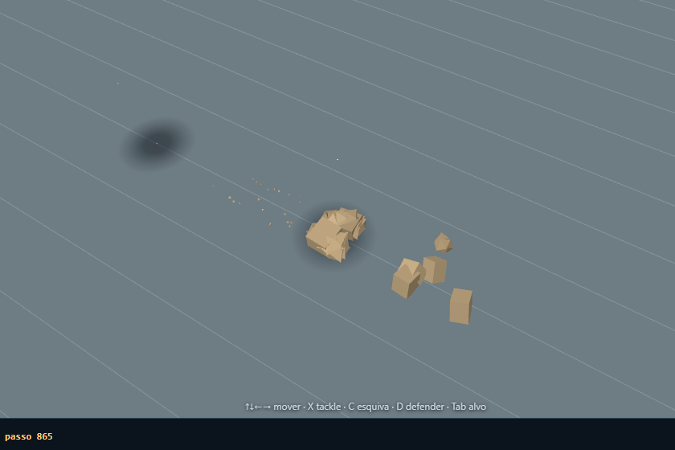 |
| D · Energético — cacos geométricos e onda baixa | 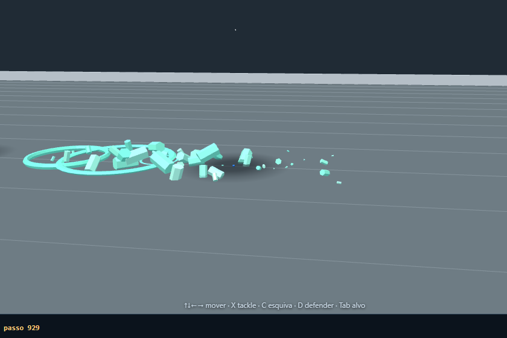 | 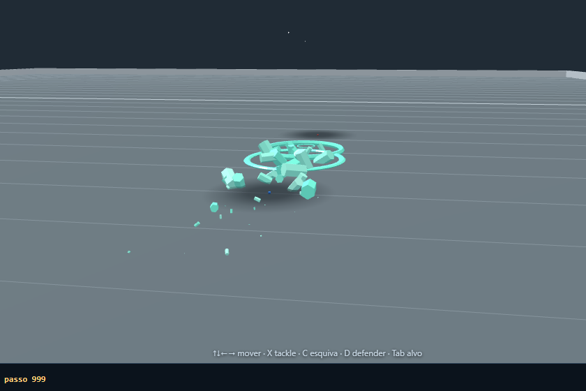 | 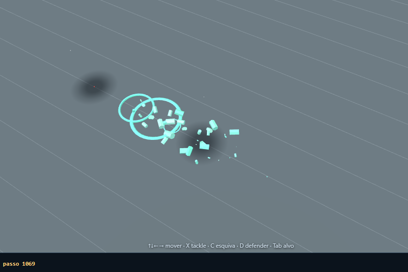 |
| Efeito | Opção | Frente | Lado |
|---|---|---|---|
| esquiva | A | | |
| esquiva | B | | |
| esquiva | C | | |
| aterrissagem | A | | |
| aterrissagem | B | | |
| aterrissagem | C | | |
| impacto | A | | |
| impacto | B | | |
| impacto | C | | |
| bloqueio | A | | |
| bloqueio | B | | |
| bloqueio | C | | |
| colisao | A | | |
| colisao | B | | |
| colisao | C | | |
{
"env": {
"renderer": "ANGLE (Google, Vulkan 1.3.0 (SwiftShader Device (Subzero) (0x0000C0DE)), SwiftShader driver)",
"ua": "Mozilla/5.0 (Windows NT 10.0; Win64; x64) AppleWebKit/537.36 (KHTML, like Gecko) HeadlessChrome/155.0.0.0 Safari/537.36 Edg/155.0.0.0"
},
"dust": {
"A": {
"updateAvgMs": 0.4136,
"updateP95Ms": 1.1,
"updateMaxMs": 9.8,
"peakActive": 220,
"rejected": 1257,
"meshes": 12
},
"B": {
"updateAvgMs": 0.2825,
"updateP95Ms": 0.4,
"updateMaxMs": 1.2,
"peakActive": 220,
"rejected": 1630,
"meshes": 12
},
"C": {
"updateAvgMs": 0.2114,
"updateP95Ms": 0.3,
"updateMaxMs": 0.9,
"peakActive": 220,
"rejected": 3130,
"meshes": 12
},
"D": {
"updateAvgMs": 0.1836,
"updateP95Ms": 0.3,
"updateMaxMs": 0.7,
"peakActive": 220,
"rejected": 4542,
"meshes": 12
}
},
"worstCase": {
"updateAvgMs": 0.1736,
"updateP95Ms": 0.3,
"updateMaxMs": 0.7,
"peakActive": 220,
"cap": 220,
"rejected": 26338,
"meshes": 12
},
"draw": {
"withSolid": {
"calls": 15,
"triangles": 2776
},
"withoutSolid": {
"calls": 12,
"triangles": 100
},
"cpuRenderMedianMsWith": 0.2,
"cpuRenderMedianMsWithout": 0.1
},
"geometries": 7,
"materials": 2
}